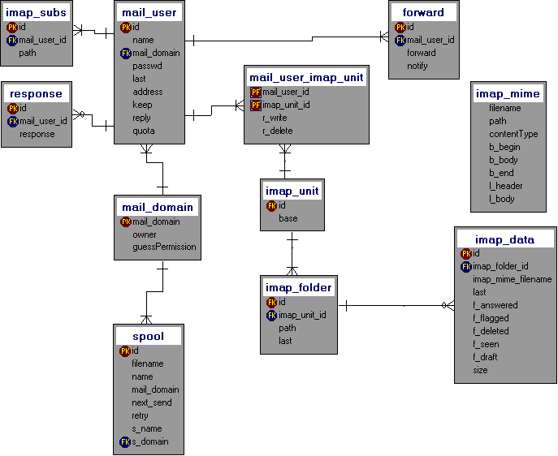

| MSSQL setup |
- Login into the database as system user
- Create a mail database:
sqlprompt> create database mail;
- Create a login for the mail server on your SQL server:
sqlprompt> sp_addlogin 'bejy', 'secret', 'mail';
- Switch to database:
sqlprompt> use mail;
- Create a user for the mail server on your SQL server:
sqlprompt> sp_adduser 'bejy', 'bejy';
- Execute the provided create script, to create all needed tables:
use the file 'create_mssql.sql'
- Grant access to all tables to the new created user:
sqlprompt> grant all on mail_user to bejy;
sqlprompt> grant all on domain to bejy;
sqlprompt> ...
sqlprompt> grant all on forward to bejy;
|
| MySQL setup |
- Login into the database as system user
- Create a mail database:
sqlprompt> create database mail;
- Create a login for the mail server on your SQL server:
sqlprompt> grant usage on mail.* to bejy@bejyhost;
- : Grant access to the new created user:
sqlprompt> grant all on mail.* to bejy@bejyhost identified by 'secret';
- Update internal stuff:
sqlprompt> flush privileges;
- Login into database as bejy (using the 'secret' as password).
- Execute the provided create script, to create all needed tables:
use the file 'create_mysql.sql'
|
| JDBC driver |
Add the JDBC driver archive to the classpath. Now you can select it in the mail config
|
| mail config |
Configure the mail settings
- intervallSwitch
the count of delivery retries until intervall switches from the shortIntervall to the longIntervall and a 2nd mail notification is sent
- jdbcDriver
class name of the JDBC driver implementation, if non is listed check your class path!
- jdbcUrl
the database specific JDBC url, w.g. jdbc:mysql://localhost/mail?user=bejy&password=secret
- longIntervall
the long intervall between resend tries in minutes
- mailDbi
class name of the database implementation, e.g. de.bb.bejy.mail.MySQLDbi if you use mysql
- mailFolder
the folder where the mail files are stored. The folder is maintained by BEJY. If you put foreign files into this folder, expect that those files get deleted!
- mainDomain
This is the default domain name of your mail server
- maxRetries
limit the retries to deliver a mail
- shortIntervall
the short intervall between resend tries in minutes
-
- apply changes
applies the displayed settings to the running server
|
| adding mail user |
- Ensure that the domain is listed in the table 'domain'.
If not, add the domain to the table and specify the mail user who owns that domain:
| SERVER | COMMAND |
|---|
| all | sqlprompt> insert into domain (domain, owner) values ('thedomain.org', 'pete'); |
- Add the mail user to the mail table:
| SERVER | COMMAND |
|---|
| MSSQL | sqlprompt> insert into mail_user (name, domain, passwd) values('pete', 'thedomain.org', 'petespassword'); |
| MySQL | sqlprompt> insert into mail_user (name, domain, passwd) values('pete', 'thedomain.org', password('petespassword')); |
|
| |
|
(c) by Stefan Bebbo Franke in 2000-2003, all rights reserved
|
|